04 · Header & Homepage
Getting out of the campaign’s way
A header that stops covering the campaign, and a homepage that stops rotating it away.
In review on a draft theme, not yet published. The numbers below are the baseline this will be measured against — not results.
Screen recording, mobile../../assets/case/04-header/hero-mobile.mp4
Screen recording, desktop../../assets/case/04-header/hero-desktop.mp4
1 · The problem
The header was a wall, and the homepage was a slideshow nobody waited for.
The header was the theme’s template, as shipped. A centred logo on a solid white bar, out of step with the design system I was rebuilding, and opaque by construction: every pixel of it hid the photography underneath. The menu and the cart opened as opaque drawers that covered the page too.
That photography is the most expensive thing on the site. Campaigns are shot by outside studios, and they are the store’s priority. The catalogue is small — small enough that the menu has comparatively little to sort — so the homepage’s job is the campaign, and the header was standing on top of it.
The homepage led with an auto-rotating carousel: two slides, six seconds each. Whatever was on the second slide was, by design, invisible for the first six seconds of every visit.
2 · What I found
Most visits end before the second slide arrives.
On a phone, the average homepage view is engaged for 4.8 seconds. The carousel advanced every 6. On desktop the figure is 9.6 seconds, so a desktop visitor does get to see the second slide — but phones are where the visits are.
autoplay_speed: 6000).The carousel was the least clicked thing on the homepage. GA4 had no click event on the homepage, so I measured what I could: the share of homepage views followed by a visit to each module’s destination. For the carousel’s product slides that is an upper bound — and it was still low.
The top tile wasn’t about categories. Editions is where the Miffy collaboration lives — the one tile that kept showing it. Most Loved was the next strongest entry point. Both mattered for what came next: they were the two things I could not afford to lose by taking the tiles away.
The outside research pointed the same way.
- Across Notre Dame’s homepage carousel, 1.07% of visits clicked it, and 89.1% of those clicks went to the first slide (Runyon, 2013). The one auto-forwarding carousel in that set did better, at 9.4% — the counterexample is in the same post.
- Auto-forwarding hides content most of the time, moves before people finish reading, and looks enough like an ad to be ignored (Nielsen Norman Group, 2013).
- 57% of viewing time is above the fold and 74% within the first two screens (NN/g, 2018). With two slides, each campaign held the top of the page only half the time.
And the research I had to argue with. Hiding navigation behind a menu icon costs more than 20% in discoverability, and desktop users were at least 39% slower with it; NN/g’s advice is not to do it on desktop (Pernice & Budiu, 2016). Translucent surfaces fail when text sits over a busy background (NN/g, 2024; 2025). I did both anyway. Decisions 02 and 03 say why, and what each one costs.
Who the decisions are for. Over the last twelve months, phones carried 83.6% of sessions. Desktop carried 12.6% of sessions but 21.1% of purchases and 19.2% of revenue: a desktop visitor converts about 1.8× as often as a mobile one, and about 3.0× in Canada. Small on traffic, not small on money.
3 · Decisions
Stacking campaigns instead of rotating them
The carousel is gone. The homepage now stacks full-width campaign banners down the page, with the impact counter and a two-up collage row between them. Nothing waits six seconds for its turn.
Old campaigns keep working. A shoot used to earn a month on the homepage and then disappear. Stacked, last season’s photography keeps a slot instead of being retired.
The order is a dial. The carousel held two banners at most. A stack holds as many as the page needs, and its order can follow sales — the best seller’s campaign moves up.
The strong tiles become banners, not casualties. The second slot is reserved for Miffy, which is what Editions was really carrying. Most Loved comes back as roughly the third banner. The brand and blog tiles, the least visited modules, step down.
Trade-off. Only about 15% of homepage views reach 90% of the page today. Every banner below the first is a bet that people keep scrolling when the next thing is new. Whether they do is the first number in section 4.
Before
- Carousel · 2 slides, 6s each
- Impact counter
- Category tiles × 4
- Brand + blog collage
- Rich text
- Instagram feed
After
- Campaign banner
- Impact counter
- Campaign banner · Miffy
- Collage row, two-up on phones too
- Campaign banner · Most Loved
- Rich text
- Instagram feed
Scroll each phone. Before is the live homepage, After is the draft, both captured at 390px on October 8, 2026, with pop-ups hidden. The draft’s second and third banners still hold other campaigns, not Miffy and Most Loved yet.
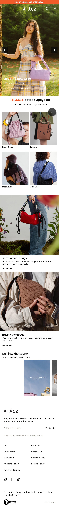
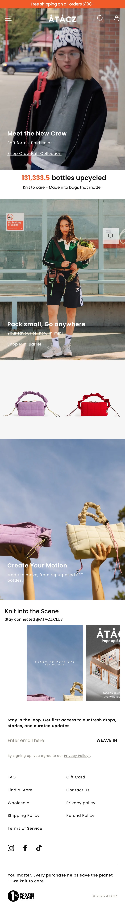
Glass instead of a wall
Every header surface — the floating bar, the menu, search and cart boxes, the sticky add to cart, and the Shopify Inbox chat button — is now translucent glass. The menu is still there, and so is the campaign behind it.
The first pass was dark. Black at 30% for the bar and 50% for the boxes, a 6px blur, rounded 19.7px corners measured off the chat button. The version in review is white: 50% on the bar and 70% on the boxes, blur(12px) saturate(180%), a bright 1px rim on the top-left edge, square corners.
Under the pointer, the glass thickens to 80%. Glass that is pleasant to look through can be unpleasant to read through, so the surface you are using gets more opaque, with a 250ms fade. The bar’s tint already follows the scroll position with no transition, so the hover value is a registered @property that animates on its own: scroll stays instant, hover stays smooth.
Then I checked the edge case, and it failed. In Chromium the glass also refracts the page at its edges, through an SVG displacement lens inside backdrop-filter. To make that visible I had lowered the box tint to 45%. Over a black section, #0c0c0c text on that comes out at 4.1:1 — under the 4.5 that AA asks of small text. And a phone never hovers, so on phones the 80% would never arrive. Touch devices now hold every surface at 80%, which also takes the 45% boxes off the table on phones.
Trade-off. On desktop Chromium the resting boxes are still 45%, because that is where the refraction reads. Hover fixes it for the person using the box. The fallback matters too: url() in backdrop-filter renders only in Chromium and voids the whole declaration elsewhere, blur included, so the lens is gated behind a class that only Chromium gets.
The same header and menu over the draft’s own campaign film, in each surface it has had, on desktop and phone at once. Both are drawn at real size and scaled down. Point at the desktop bar to see its hover tint; a phone never hovers, so it holds that thicker glass all the time.
Surface
Behind it
The glass, from the theme
:root {
--glass-filter: blur(12px) saturate(180%);
--glass-box-tint: rgba(255, 255, 255, 0.7);
--glass-box-tint-hover: rgba(255, 255, 255, 0.8);
}
/* Chromium only: the lens replaces the filter, lighter tint so it shows */
:root.liquid-glass-refraction {
--glass-filter: url(#LiquidGlassRefraction);
--glass-box-tint: rgba(255, 255, 255, 0.45);
}
/* Bar: 50%, 80% under the pointer, faded on its own */
@property --bar-hover { syntax: '<number>'; inherits: false; initial-value: 0; }
background: rgba(255, 255, 255, calc(0.5 + 0.3 * var(--bar-hover, 0)));
/* Touch devices: the pointer never arrives, so hold the hover tint */
@media (hover: none) {
:root, :root.liquid-glass-refraction { --glass-box-tint: var(--glass-box-tint-hover); }
}One menu button, at every width
Desktop now uses the same off-canvas layout as phones: a menu button and search on the left, the logo in the middle, the cart on the right. Menu, search and cart each open as a glass box under the bar, and only one is open at a time — opening one closes the others first. The page stays scrollable behind them.
Why give desktop a hamburger. Phones are 83.6% of sessions, so the menu button is the navigation most visitors already know. Giving desktop the same button means one pattern to learn instead of two. And with a catalogue this small the menu has comparatively little to sort; the priority on the page is the campaign, not the category tree.
Trade-off, taken knowingly. This is the decision the research argues against most directly: hidden navigation was more than 20% less discoverable and at least 39% slower on desktop. Desktop is 12.6% of sessions but 21.1% of purchases, so the cost lands on the visitors who buy the most often. The categories open expanded inside the box, and desktop conversion and menu use are the first things I will watch after launch.
On a phone: open the menu, search or cart. Only one box is ever open, and the button that opened it turns into its close.
barrel
Products
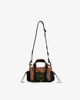
Mini Barrel Bag$139.00
Search for “barrel”
Your cart
Mini Barrel Bag
Mud · 1$139.00
Subtotal$139.00
Check out View cartA bar that follows the scroll, not a breakpoint
On the homepage the header starts as transparent type over the first banner. Instead of snapping into a sticky bar at some threshold, it becomes one gradually: over the first 200px of scroll, a single value, --sticky-progress, goes from 0 to 1, and the tint, blur, inset, padding and logo size are all written as functions of it. Scroll back up and it unwinds by the same amount.
And it never leaves. On phones the vendor header hides on scroll down; this one stays in view at every width. One consequence I had to fix: the collection page’s sticky filter bar only stuck while the header was hidden, so it ended up stuck underneath the header, out of sight. It scrolls with the page now.
On a product page, the bar brings the buy button with it. Once the main Add to cart has scrolled out of view, the price and an Add to cart button appear right under the right end of the bar. Shoppers scroll down through photos, details and pairings, and buying stays one tap away instead of a scroll back up. That is the part of the header closest to revenue, and the main reason the bar is never allowed to leave. Decision 05 covers how it stays correct.
Scroll inside the frame and watch the header become the floating bar. On the homepage it follows the scroll; on a product page it switches at the header’s bottom edge with a fade. Keep scrolling past Add to cart and the price and button drop in under the bar. Switch to Before for the live theme: its sticky header is turned off, so the header scrolls away with the page and there is no sticky add to cart. Desktop and phone scroll separately. Phones hold the hover term at 1, so their bar ends at 80%.
Free shipping on all orders $108+
Made to move, from repurposed PET bottles.
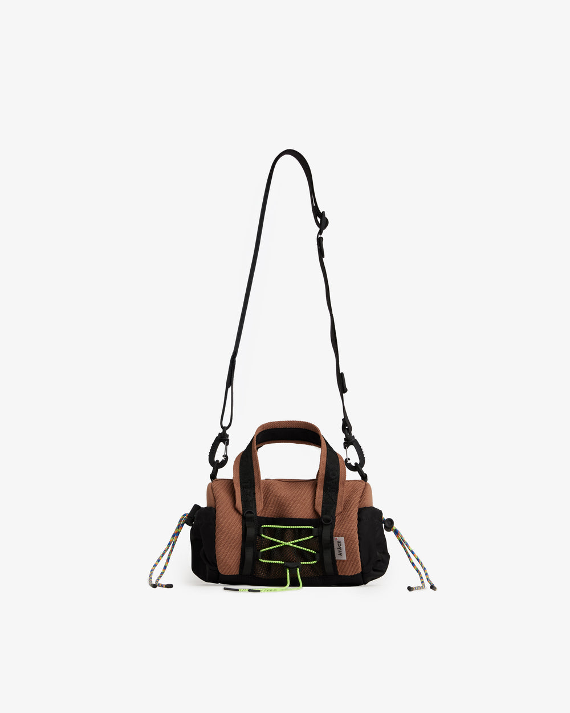
× 6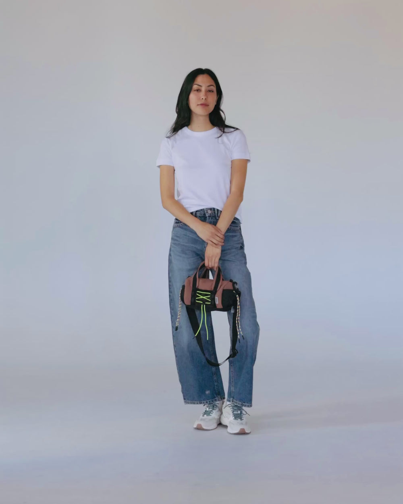
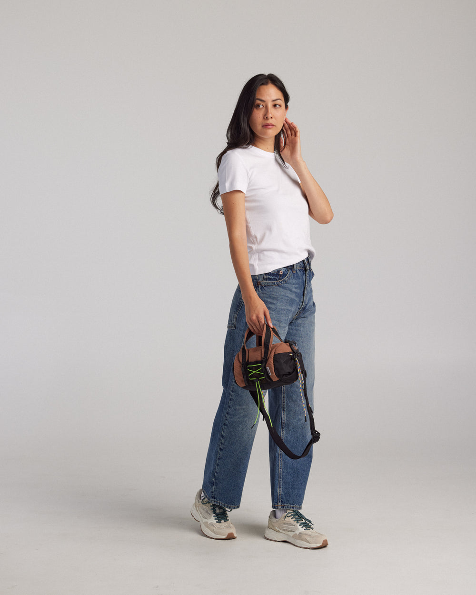
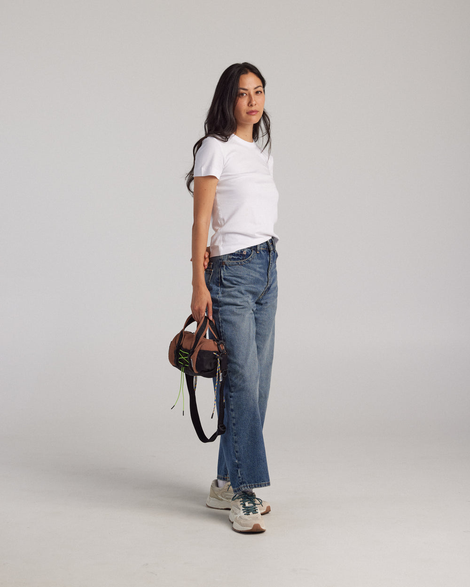
Low stock
Mini Barrel Bag
$139.00
Color – Mud
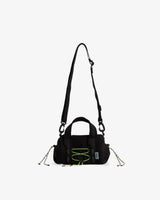 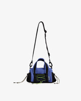 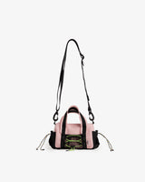
Pair well with
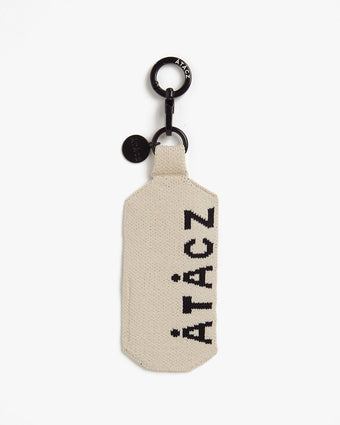
Knitted Tag$20.00Sold out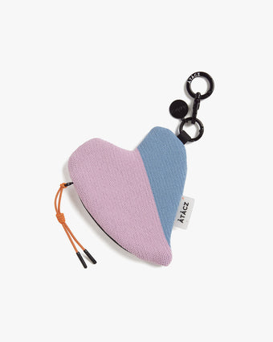
Heart Knitted Pouch– Black$39.00+1Add to cart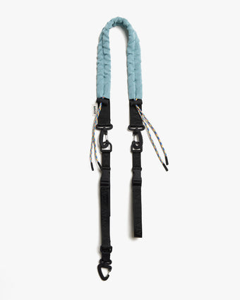
Harness Strap– Mist Grey$99.00Add to cart
Details
Size
Materials & Care
Shipping & Returns
scroll 0px · sticky off · --sticky-progress 0.00Version
Page
The scroll handler and the bar, from the theme
// Transparent header: stick once the announcement bar has gone, 0..1 over 200px.
// Solid header: stick at the header's bottom edge.
const stickAt = scrollLinked ? this.headerBounds.top : this.headerBounds.bottom;
const progress = Math.min(Math.max((scrollTop - this.headerBounds.top) / 200, 0), 1) || 0;
this.header.style.setProperty('--sticky-progress', progress);
/* the bar, as functions of progress */
left: calc(var(--bar-inset) * var(--sticky-progress, 1));
width: calc(100% - var(--bar-inset) * 2 * var(--sticky-progress, 1));
background: rgba(255, 255, 255,
calc((0.5 + 0.3 * var(--bar-hover, 0)) * var(--sticky-progress, 1)));
--image-logo-height: calc(40px - 10px * var(--sticky-progress, 1)); /* phone: 24px - 7.2px */A sticky add to cart that can’t disagree with the form
On product pages, once the main Add to Cart has scrolled fully out of view, a small glass box appears under the right end of the bar with the price and a button. It hides again while the menu, search or cart is open.
It owns nothing. The theme ships a sticky cart block, and I didn’t use it: its form tests inventory only and never sends the pre-order property, so a pre-order added from it would reach the order untagged (see Case 03). This one mirrors the real button instead — label, disabled state, loading state and price, kept in sync by a MutationObserver — and clicking it clicks that button. Variant, quantity, sold out and pre-order are whatever the real form says, because it is the real form.
Trade-off. On desktop the product column is sticky, so the box appears only after the whole product section has scrolled away. That is intended.
The mirror, from the theme
// The first product form in the main content is the product page's own
this.source = document.querySelector('#MainContent product-form .product-form__submit');
this.button.addEventListener('click', () => this.source.click());
this.mutationObserver = new MutationObserver(this.sync);
this.mutationObserver.observe(this.source,
{ attributes: true, childList: true, characterData: true, subtree: true });
// Only once the button has been scrolled fully past, not while it is still below
this.intersectionObserver = new IntersectionObserver(([entry]) => {
this.classList.toggle('is-visible', !entry.isIntersecting && entry.boundingClientRect.bottom < 0);
});
sync() {
this.button.textContent = this.source.textContent.trim();
this.button.disabled = this.source.disabled;
this.button.classList.toggle('loading', this.source.classList.contains('loading'));
}A small reward for curiosity
The homepage’s impact counter adds up the PET bottles our bags are knitted from. On the draft, the number is a button: press it and a bottle flies out and drops off the screen.
Built to be harmless. It is a real <button>, so a keyboard can launch one too, from the middle of the number. Thirty bottles in flight at most, so mashing it cannot pile up DOM. Motion is time-based, so 60Hz and 120Hz screens draw the same arc. With reduced motion turned on, nothing flies.
Press the number.
Knit to care - Made into bags that matter
4 · What’s in review
Two draft themes, one stacked on the other. The first carries the homepage layout, the off-canvas header and its scroll-linked bar, the sticky add to cart and the bottle. The second adds the white liquid glass on top. Every change ships as a pushed file on a draft, read back byte for byte; the live theme is untouched until a person publishes it.
5 · What I’ll measure
Nothing here has launched, so there are no results. There is a baseline, and a list of what would make this wrong.
| Question | Baseline | How |
|---|---|---|
| Do people click the homepage’s campaigns? | ≤2.6% of homepage views reached a carousel destination | A click and view event per banner — there is none today |
| Does a stack beat a slideshow? | Mobile view 4.8s against a 6s rotation | Banner views per homepage view, by slot |
| Did Miffy and Most Loved survive the move? | 10.1% and 3.5% as tiles | The same share, from their banners |
| Did desktop pay for the menu button? | Desktop: 12.6% of sessions, 21.1% of purchases | Desktop conversion, and menu opens per session |
One measure I won’t use. “About 15% reach 90% of the page” looks like the obvious score for a homepage built to be scrolled. But scroll depth is a share of page length, and stacking banners makes the page longer, so the same scrolling reads as less. I made exactly that mistake once already (Case 02). Banner views are counted in banners, not percent.
6 · What’s next
Track the banners before launch, not after. The case for stacking is that more slots let the data pile up — which is only true if every banner reports its views and clicks. Without that, there is nothing to pile up.
Correct for position. Ordering by sales means the best seller gets the top slot, and the top slot gets clicked more whatever is in it. Rotating the order now and then is what lets a click mean “this campaign” rather than “this slot”.
Desktop navigation is still an open question. If desktop conversion drops, the cheap fix NN/g’s research suggests is combination navigation: two or three labels — New Arrivals, Miffy — beside the menu button, in the same bar.
A system preference for less glass. prefers-reduced-transparency lets people who have turned transparency down get an opaque header. Chromium supports it; Safari doesn’t yet.